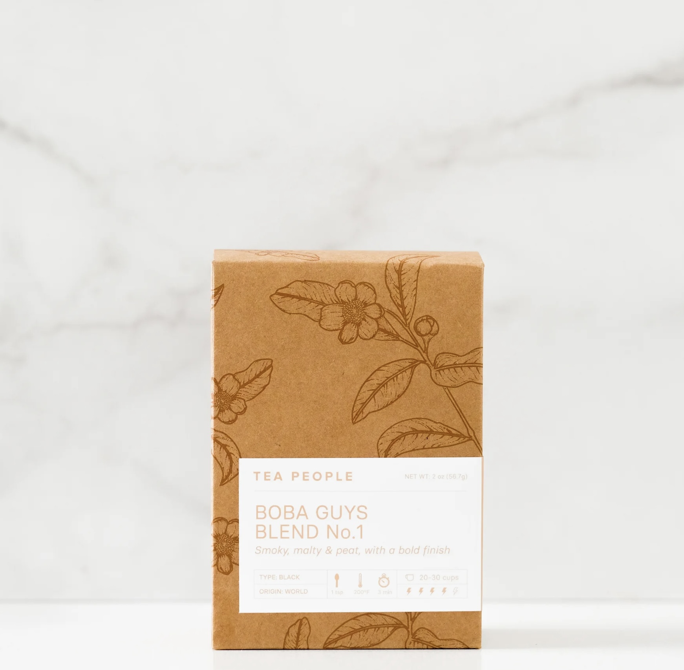

Seasonal Specials
Mango Matcha Latte
Our organic premium-grade matcha from Tea People layered over your choice of milk and housemade mango purée.
Mango Jasmine Fresca
Bright, vibrant and refreshing. Our housemade mango purée paired with our floral jasmine tea.
Matcha Yuzu Palmer
Floral housemade yuzu lemonade meets our Tea People organic matcha. A Boba Blast twist on a classic Arnold Palmer.
Passionfruit Fresca
Sweet, tart and refreshing. Our all-natural passion-fruit purée paired with our floral jasmine tea. NY exclusive.
Cloud Series
Pastel Paradise Cloud
Our lychee and strawberry fresca topped with our light, creamy cloud conjures up thoughts of sunsets and summertime.
Sawadee Cloud
A new take on coffee! Thai tea and cold brew coffee topped with our light, creamy cloud.
Midori Cloud
Tea People organic matcha is cold brewed and topped with our light, creamy cloud.
Build Your Drink
Classic Black

A special blend of black teas from China and South Asia with your choice of milk and sweetness.
Jasmine Green
Our Jasmine Green from Tea People. Floral and silky. Contains caffeine.
Decaf Black

Our Decaf Black from Tea People. A full-bodied black tea without the kick. Caffeine-free.
Rose Black
A Ceylon black tea with a sweet fullness of delicate young rosebuds and petals. Contains caffeine.
Hibiscus Mint Tea
Our version of an Agua de Jamaica: a tart blend of real hibiscus flowers, rose hips and mint, that produce a slightly sweet and beautifully bright red steep. Served iced & caffeine-free.
Matcha & Hojicha
Strawberry Matcha Latte
Our signature and most popular drink. Organic premium-grade matcha from Tea People layered over your choice of milk and our housemade strawberry puree. Contains caffeine.
Matcha Latte
Our organic premium-grade matcha from Tea People layered over your choice of milk and sweetener. Contains caffeine.
Black Sugar Hojicha
Our organic hojicha powder from Tea People is a roasted green tea that’s low in caffeine but high in toastiness. Our housemade kuromitsu syrup compliments the nutty flavor of hojicha. Contains caffeine.
Specialty
Korean Banana Milk
Creamy and uniquely sweet - it’s our elevated take on Korea's boxed Banana Milk. All-natural, housemade banana jam paired with oat milk. Dairy and caffeine-free.
Horchata
One of our mainstays and a nod to the Mission (where it all started). Housemade with rice milk, cinnamon, sugar and a splash of almond milk for taste. Dairy and caffeine-free.
Thai Tea
Brewed from a strong Ceylon green tea and spices combined with dairy milk and organic condensed milk. Contains caffeine.
Strawberry Fields
Your choice of milk layered over our housemade strawberry puree. A tasty treat for kids and the kid in you. Caffeine-free.
Ube Latte
Light and airy - our housemade ube puree layered with silky coconut milk and hints of vanilla. Caffeine-free.
Hong Kong Milk Tea
A robust but sweet premium loose leaf black tea blended with organic condensed milk. Contains caffeine.
Fruit Frescas
Strawberry Jasmine
A refreshing blend of strawberries and jasmine green tea.
Berry Hibiscus
A tart and fruity drink fused with strawberry, mint and hibiscus tea. Caffeine-free.
Lychee Oolong
Sweet and aromatic taste of lychee combined with vanilla notes from Tie Guan Yin from Tea People. Contains caffeine.
Mango Jasmine Fresca
Bright, vibrant and refreshing. Our housemade mango purée paired with our floral jasmine tea.
Passionfruit Fresca
Sweet, tart and refreshing. Our all-natural passion-fruit purée paired with our floral jasmine tea. NY exclusive.
Coffee
Dirty Horchata
A shot of Proyecto Diaz espresso layered over our horchata. Contains caffeine.
Dirty Banana Milk
Creamy and uniquely sweet - it’s our elevated take on Korean Boxed Banana Milk but layered with a shot of espresso from Proyecto Diaz. Contains caffeine.
Shaken Cold Brew
Bold and shaken cold brew made from Proyecto Diaz. Contains caffeine.
Espresso Milk Tea
Our Classic Black milk tea served up with a shot of espresso over the top.
Coffee Milk Tea
Made similar to our classic milk tea but with a healthy shot of our own house blend of coffee. Made with your choice of milk and sweetness.
Cafe Latte
Coffee made from Proyecto Diaz and your choice of milk.
Tea People
Muscat Oolong
A strong and smooth oolong tea balanced perfectly with the fruit flavor of the muscat grapes (traditionally wine grapes). 2oz of loose leaf oolong tea. $18.00
Lychee Green Tea
A blend of lychee fruit and fragrant green tea. Really great as an iced tea but still goes (really) well with milk. 2oz of loose leaf green tea. $18.00
Earl Grey
Our own spin on a timeless classic: A Keemun Black tea base flavored with 100% all natural Bergamot oil. 2oz of loose leaf black tea. $18.00
Organic Matcha Tin
Our premium-grade organic matcha is grown and produced in Nishio city in Aichi prefecture of Japan. Nishio has been known around the world as the cradle of the finest matcha for more than 800 years Each tin contains 30 grams of matcha - approximately 15-20 servings. Tin sealed for freshness. $25.00
Organic Hojicha Tin
Hojicha is a roasted green tea. Low in caffeine, but high in toastiness! Great hot or cold + goes well with milk. Each tin contains 30 grams of hojicha - approximately 15-20 servings. Tin sealed for freshness. $20.00
Boba Blast Blend No.1
The same malty & silky signature black tea blend made for Boba Blast' 'Classic Milk Tea.' Great hot or cold + goes well with milk. 2oz of loose leaf black tea. $12.00
Jasmine Green
Green tea married with strong floral notes from jasmine blossoms that play like LeBron and sing like Mariah. Not to mention, it's loaded with natural antioxidants (the good stuff). Works equally well hot or cold + goes great with milk. 2oz of loose leaf green tea. $12.00
Bamboo Matcha Whisk
The bamboo whisk, known as Chasen used in the Japanese tea ceremony is perfectly designed and hand-crafted from white bamboo to make your traditional style Matcha. The bamboo strands are exquisitely designed to produce the creamiest froth which is essential to the traditional style drinking of Matcha. The creaminess of the froth is the mark of well-prepared Matcha. $8.00